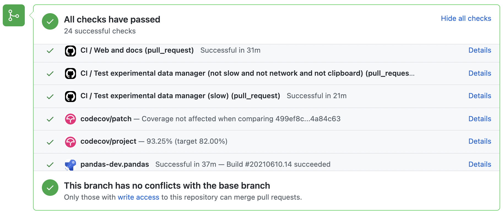

Contributing to the code base#
Table of Contents:
Code standards#
Writing good code is not just about what you write. It is also about how you write it. During Continuous Integration testing, several tools will be run to check your code for stylistic errors. Generating any warnings will cause the test to fail. Thus, good style is a requirement for submitting code to pandas.
There is a tool in pandas to help contributors verify their changes before contributing them to the project:
./ci/code_checks.sh
The script validates the doctests, formatting in docstrings, and
imported modules. It is possible to run the checks independently by using the
parameters docstring, code, and doctests
(e.g. ./ci/code_checks.sh doctests).
In addition, because a lot of people use our library, it is important that we do not make sudden changes to the code that could have the potential to break a lot of user code as a result, that is, we need it to be as backwards compatible as possible to avoid mass breakages.
In addition to ./ci/code_checks.sh, some extra checks (including static type
checking) are run by pre-commit - see here
for how to run them.
Pre-commit#
Additionally, Continuous Integration will run code formatting checks
like black, flake8 (including a pandas-dev-flaker plugin),
isort, and cpplint and more using pre-commit hooks
Any warnings from these checks will cause the Continuous Integration to fail; therefore,
it is helpful to run the check yourself before submitting code. This
can be done by installing pre-commit:
pip install pre-commit
and then running:
pre-commit install
from the root of the pandas repository. Now all of the styling checks will be
run each time you commit changes without your needing to run each one manually.
In addition, using pre-commit will also allow you to more easily
remain up-to-date with our code checks as they change.
Note that if needed, you can skip these checks with git commit --no-verify.
If you don’t want to use pre-commit as part of your workflow, you can still use it
to run its checks with:
pre-commit run --files <files you have modified>
without needing to have done pre-commit install beforehand.
If you want to run checks on all recently committed files on upstream/main you can use:
pre-commit run --from-ref=upstream/main --to-ref=HEAD --all-files
without needing to have done pre-commit install beforehand.
Note
If you have conflicting installations of virtualenv, then you may get an
error - see here.
Also, due to a bug in virtualenv,
you may run into issues if you’re using conda. To solve this, you can downgrade
virtualenv to version 20.0.33.
Optional dependencies#
Optional dependencies (e.g. matplotlib) should be imported with the private helper
pandas.compat._optional.import_optional_dependency. This ensures a
consistent error message when the dependency is not met.
All methods using an optional dependency should include a test asserting that an
ImportError is raised when the optional dependency is not found. This test
should be skipped if the library is present.
All optional dependencies should be documented in
Optional dependencies and the minimum required version should be
set in the pandas.compat._optional.VERSIONS dict.
Backwards compatibility#
Please try to maintain backward compatibility. pandas has lots of users with lots of existing code, so don’t break it if at all possible. If you think breakage is required, clearly state why as part of the pull request. Also, be careful when changing method signatures and add deprecation warnings where needed. Also, add the deprecated sphinx directive to the deprecated functions or methods.
If a function with the same arguments as the one being deprecated exist, you can use
the pandas.util._decorators.deprecate:
from pandas.util._decorators import deprecate
deprecate('old_func', 'new_func', '1.1.0')
Otherwise, you need to do it manually:
import warnings
from pandas.util._exceptions import find_stack_level
def old_func():
"""Summary of the function.
.. deprecated:: 1.1.0
Use new_func instead.
"""
warnings.warn(
'Use new_func instead.',
FutureWarning,
stacklevel=find_stack_level(),
)
new_func()
def new_func():
pass
You’ll also need to
Write a new test that asserts a warning is issued when calling with the deprecated argument
Update all of pandas existing tests and code to use the new argument
See Testing a warning for more.
Type hints#
pandas strongly encourages the use of PEP 484 style type hints. New development should contain type hints and pull requests to annotate existing code are accepted as well!
Style guidelines#
Type imports should follow the from typing import ... convention. Some types do not need to be imported since PEP 585 some builtin constructs, such as list and tuple, can directly be used for type annotations. So rather than
import typing
primes: typing.List[int] = []
You should write
primes: list[int] = []
Optional should be avoided in favor of the shorter | None, so instead of
from typing import Union
maybe_primes: list[Union[int, None]] = []
or
from typing import Optional
maybe_primes: list[Optional[int]] = []
You should write
from __future__ import annotations # noqa: F404
maybe_primes: list[int | None] = []
In some cases in the code base classes may define class variables that shadow builtins. This causes an issue as described in Mypy 1775. The defensive solution here is to create an unambiguous alias of the builtin and use that without your annotation. For example, if you come across a definition like
class SomeClass1:
str = None
The appropriate way to annotate this would be as follows
str_type = str
class SomeClass2:
str: str_type = None
In some cases you may be tempted to use cast from the typing module when you know better than the analyzer. This occurs particularly when using custom inference functions. For example
from typing import cast
from pandas.core.dtypes.common import is_number
def cannot_infer_bad(obj: Union[str, int, float]):
if is_number(obj):
...
else: # Reasonably only str objects would reach this but...
obj = cast(str, obj) # Mypy complains without this!
return obj.upper()
The limitation here is that while a human can reasonably understand that is_number would catch the int and float types mypy cannot make that same inference just yet (see mypy #5206. While the above works, the use of cast is strongly discouraged. Where applicable a refactor of the code to appease static analysis is preferable
def cannot_infer_good(obj: Union[str, int, float]):
if isinstance(obj, str):
return obj.upper()
else:
...
With custom types and inference this is not always possible so exceptions are made, but every effort should be exhausted to avoid cast before going down such paths.
pandas-specific types#
Commonly used types specific to pandas will appear in pandas._typing and you should use these where applicable. This module is private for now but ultimately this should be exposed to third party libraries who want to implement type checking against pandas.
For example, quite a few functions in pandas accept a dtype argument. This can be expressed as a string like "object", a numpy.dtype like np.int64 or even a pandas ExtensionDtype like pd.CategoricalDtype. Rather than burden the user with having to constantly annotate all of those options, this can simply be imported and reused from the pandas._typing module
from pandas._typing import Dtype
def as_type(dtype: Dtype) -> ...:
...
This module will ultimately house types for repeatedly used concepts like “path-like”, “array-like”, “numeric”, etc… and can also hold aliases for commonly appearing parameters like axis. Development of this module is active so be sure to refer to the source for the most up to date list of available types.
Validating type hints#
pandas uses mypy and pyright to statically analyze the code base and type hints. After making any change you can ensure your type hints are correct by running
# the following might fail if the installed pandas version does not correspond to your local git version
pre-commit run --hook-stage manual --all-files
# if the above fails due to stubtest
SKIP=stubtest pre-commit run --hook-stage manual --all-files
in your activated python environment. A recent version of numpy (>=1.22.0) is required for type validation.
Testing type hints in code using pandas#
Warning
Pandas is not yet a py.typed library (PEP 561)! The primary purpose of locally declaring pandas as a py.typed library is to test and improve the pandas-builtin type annotations.
Until pandas becomes a py.typed library, it is possible to easily experiment with the type annotations shipped with pandas by creating an empty file named “py.typed” in the pandas installation folder:
python -c "import pandas; import pathlib; (pathlib.Path(pandas.__path__[0]) / 'py.typed').touch()"
The existence of the py.typed file signals to type checkers that pandas is already a py.typed library. This makes type checkers aware of the type annotations shipped with pandas.
Testing with continuous integration#
The pandas test suite will run automatically on GitHub Actions continuous integration services, once your pull request is submitted. However, if you wish to run the test suite on a branch prior to submitting the pull request, then the continuous integration services need to be hooked to your GitHub repository. Instructions are here for GitHub Actions.
A pull-request will be considered for merging when you have an all ‘green’ build. If any tests are failing, then you will get a red ‘X’, where you can click through to see the individual failed tests. This is an example of a green build.
Test-driven development#
pandas is serious about testing and strongly encourages contributors to embrace test-driven development (TDD). This development process “relies on the repetition of a very short development cycle: first the developer writes an (initially failing) automated test case that defines a desired improvement or new function, then produces the minimum amount of code to pass that test.” So, before actually writing any code, you should write your tests. Often the test can be taken from the original GitHub issue. However, it is always worth considering additional use cases and writing corresponding tests.
Adding tests is one of the most common requests after code is pushed to pandas. Therefore, it is worth getting in the habit of writing tests ahead of time so this is never an issue.
Writing tests#
All tests should go into the tests subdirectory of the specific package.
This folder contains many current examples of tests, and we suggest looking to these for
inspiration. Ideally, there should be one, and only one, obvious place for a test to reside.
Until we reach that ideal, these are some rules of thumb for where a test should
be located.
Does your test depend only on code in
pd._libs.tslibs? This test likely belongs in one of:tests.tslibs
Note
No file in
tests.tslibsshould import from any pandas modules outside ofpd._libs.tslibstests.scalar
tests.tseries.offsets
Does your test depend only on code in pd._libs? This test likely belongs in one of:
tests.libs
tests.groupby.test_libgroupby
Is your test for an arithmetic or comparison method? This test likely belongs in one of:
tests.arithmetic
Note
These are intended for tests that can be shared to test the behavior of DataFrame/Series/Index/ExtensionArray using the
box_with_arrayfixture.tests.frame.test_arithmetic
tests.series.test_arithmetic
Is your test for a reduction method (min, max, sum, prod, …)? This test likely belongs in one of:
tests.reductions
Note
These are intended for tests that can be shared to test the behavior of DataFrame/Series/Index/ExtensionArray.
tests.frame.test_reductions
tests.series.test_reductions
tests.test_nanops
Is your test for an indexing method? This is the most difficult case for deciding where a test belongs, because there are many of these tests, and many of them test more than one method (e.g. both
Series.__getitem__andSeries.loc.__getitem__)Is the test specifically testing an Index method (e.g.
Index.get_loc,Index.get_indexer)? This test likely belongs in one of:tests.indexes.test_indexing
tests.indexes.fooindex.test_indexing
Within that files there should be a method-specific test class e.g.
TestGetLoc.In most cases, neither
SeriesnorDataFrameobjects should be needed in these tests.Is the test for a Series or DataFrame indexing method other than
__getitem__or__setitem__, e.g.xs,where,take,mask,lookup, orinsert? This test likely belongs in one of:tests.frame.indexing.test_methodname
tests.series.indexing.test_methodname
Is the test for any of
loc,iloc,at, oriat? This test likely belongs in one of:tests.indexing.test_loc
tests.indexing.test_iloc
tests.indexing.test_at
tests.indexing.test_iat
Within the appropriate file, test classes correspond to either types of indexers (e.g.
TestLocBooleanMask) or major use cases (e.g.TestLocSetitemWithExpansion).See the note in section D) about tests that test multiple indexing methods.
Is the test for
Series.__getitem__,Series.__setitem__,DataFrame.__getitem__, orDataFrame.__setitem__? This test likely belongs in one of:tests.series.test_getitem
tests.series.test_setitem
tests.frame.test_getitem
tests.frame.test_setitem
If many cases such a test may test multiple similar methods, e.g.
import pandas as pd import pandas._testing as tm def test_getitem_listlike_of_ints(): ser = pd.Series(range(5)) result = ser[[3, 4]] expected = pd.Series([2, 3]) tm.assert_series_equal(result, expected) result = ser.loc[[3, 4]] tm.assert_series_equal(result, expected)
In cases like this, the test location should be based on the underlying method being tested. Or in the case of a test for a bugfix, the location of the actual bug. So in this example, we know that
Series.__getitem__callsSeries.loc.__getitem__, so this is really a test forloc.__getitem__. So this test belongs intests.indexing.test_loc.Is your test for a DataFrame or Series method?
Is the method a plotting method? This test likely belongs in one of:
tests.plotting
Is the method an IO method? This test likely belongs in one of:
tests.io
Otherwise This test likely belongs in one of:
tests.series.methods.test_mymethod
tests.frame.methods.test_mymethod
Note
If a test can be shared between DataFrame/Series using the
frame_or_seriesfixture, by convention it goes in thetests.framefile.
Is your test for an Index method, not depending on Series/DataFrame? This test likely belongs in one of:
tests.indexes
Is your test for one of the pandas-provided ExtensionArrays (
Categorical,DatetimeArray,TimedeltaArray,PeriodArray,IntervalArray,PandasArray,FloatArray,BoolArray,StringArray)? This test likely belongs in one of:tests.arrays
Is your test for all ExtensionArray subclasses (the “EA Interface”)? This test likely belongs in one of:
tests.extension
Using pytest#
Test structure#
pandas existing test structure is mostly class-based, meaning that you will typically find tests wrapped in a class.
class TestReallyCoolFeature:
def test_cool_feature_aspect(self):
pass
We prefer a more functional style using the pytest framework, which offers a richer testing framework that will facilitate testing and developing. Thus, instead of writing test classes, we will write test functions like this:
def test_really_cool_feature():
pass
Preferred pytest idioms#
Functional tests named
def test_*and only take arguments that are either fixtures or parameters.Use a bare
assertfor testing scalars and truth-testingUse
tm.assert_series_equal(result, expected)andtm.assert_frame_equal(result, expected)for comparingSeriesandDataFrameresults respectively.Use @pytest.mark.parameterize when testing multiple cases.
Use pytest.mark.xfail when a test case is expected to fail.
Use pytest.mark.skip when a test case is never expected to pass.
Use pytest.param when a test case needs a particular mark.
Use @pytest.fixture if multiple tests can share a setup object.
Warning
Do not use pytest.xfail (which is different than pytest.mark.xfail) since it immediately stops the
test and does not check if the test will fail. If this is the behavior you desire, use pytest.skip instead.
If a test is known to fail but the manner in which it fails
is not meant to be captured, use pytest.mark.xfail It is common to use this method for a test that
exhibits buggy behavior or a non-implemented feature. If
the failing test has flaky behavior, use the argument strict=False. This
will make it so pytest does not fail if the test happens to pass.
Prefer the decorator @pytest.mark.xfail and the argument pytest.param
over usage within a test so that the test is appropriately marked during the
collection phase of pytest. For xfailing a test that involves multiple
parameters, a fixture, or a combination of these, it is only possible to
xfail during the testing phase. To do so, use the request fixture:
def test_xfail(request):
mark = pytest.mark.xfail(raises=TypeError, reason="Indicate why here")
request.node.add_marker(mark)
xfail is not to be used for tests involving failure due to invalid user arguments.
For these tests, we need to verify the correct exception type and error message
is being raised, using pytest.raises instead.
Testing a warning#
Use tm.assert_produces_warning as a context manager to check that a block of code raises a warning.
with tm.assert_produces_warning(DeprecationWarning):
pd.deprecated_function()
If a warning should specifically not happen in a block of code, pass False into the context manager.
with tm.assert_produces_warning(False):
pd.no_warning_function()
If you have a test that would emit a warning, but you aren’t actually testing the
warning itself (say because it’s going to be removed in the future, or because we’re
matching a 3rd-party library’s behavior), then use pytest.mark.filterwarnings to
ignore the error.
@pytest.mark.filterwarnings("ignore:msg:category")
def test_thing(self):
pass
If you need finer-grained control, you can use Python’s warnings module to control whether a warning is ignored or raised at different places within a single test.
with warnings.catch_warnings():
warnings.simplefilter("ignore", FutureWarning)
Testing an exception#
Use pytest.raises as a context manager
with the specific exception subclass (i.e. never use Exception) and the exception message in match.
with pytest.raises(ValueError, match="an error"):
raise ValueError("an error")
Testing involving files#
The tm.ensure_clean context manager creates a temporary file for testing,
with a generated filename (or your filename if provided), that is automatically
deleted when the context block is exited.
with tm.ensure_clean('my_file_path') as path:
# do something with the path
Testing involving network connectivity#
It is highly discouraged to add a test that connects to the internet due to flakiness of network connections and
lack of ownership of the server that is being connected to. If network connectivity is absolutely required, use the
tm.network decorator.
@tm.network # noqa
def test_network():
result = package.call_to_internet()
If the test requires data from a specific website, specify check_before_test=True and the site in the decorator.
@tm.network("https://www.somespecificsite.com", check_before_test=True)
def test_network():
result = pd.read_html("https://www.somespecificsite.com")
Example#
Here is an example of a self-contained set of tests in a file pandas/tests/test_cool_feature.py
that illustrate multiple features that we like to use. Please remember to add the Github Issue Number
as a comment to a new test.
import pytest
import numpy as np
import pandas as pd
@pytest.mark.parametrize('dtype', ['int8', 'int16', 'int32', 'int64'])
def test_dtypes(dtype):
assert str(np.dtype(dtype)) == dtype
@pytest.mark.parametrize(
'dtype', ['float32', pytest.param('int16', marks=pytest.mark.skip),
pytest.param('int32', marks=pytest.mark.xfail(
reason='to show how it works'))])
def test_mark(dtype):
assert str(np.dtype(dtype)) == 'float32'
@pytest.fixture
def series():
return pd.Series([1, 2, 3])
@pytest.fixture(params=['int8', 'int16', 'int32', 'int64'])
def dtype(request):
return request.param
def test_series(series, dtype):
# GH <issue_number>
result = series.astype(dtype)
assert result.dtype == dtype
expected = pd.Series([1, 2, 3], dtype=dtype)
tm.assert_series_equal(result, expected)
A test run of this yields
((pandas) bash-3.2$ pytest test_cool_feature.py -v
=========================== test session starts ===========================
platform darwin -- Python 3.6.2, pytest-3.6.0, py-1.4.31, pluggy-0.4.0
collected 11 items
tester.py::test_dtypes[int8] PASSED
tester.py::test_dtypes[int16] PASSED
tester.py::test_dtypes[int32] PASSED
tester.py::test_dtypes[int64] PASSED
tester.py::test_mark[float32] PASSED
tester.py::test_mark[int16] SKIPPED
tester.py::test_mark[int32] xfail
tester.py::test_series[int8] PASSED
tester.py::test_series[int16] PASSED
tester.py::test_series[int32] PASSED
tester.py::test_series[int64] PASSED
Tests that we have parametrized are now accessible via the test name, for example we could run these with -k int8 to sub-select only those tests which match int8.
((pandas) bash-3.2$ pytest test_cool_feature.py -v -k int8
=========================== test session starts ===========================
platform darwin -- Python 3.6.2, pytest-3.6.0, py-1.4.31, pluggy-0.4.0
collected 11 items
test_cool_feature.py::test_dtypes[int8] PASSED
test_cool_feature.py::test_series[int8] PASSED
Using hypothesis#
Hypothesis is a library for property-based testing. Instead of explicitly parametrizing a test, you can describe all valid inputs and let Hypothesis try to find a failing input. Even better, no matter how many random examples it tries, Hypothesis always reports a single minimal counterexample to your assertions - often an example that you would never have thought to test.
See Getting Started with Hypothesis for more of an introduction, then refer to the Hypothesis documentation for details.
import json
from hypothesis import given, strategies as st
any_json_value = st.deferred(lambda: st.one_of(
st.none(), st.booleans(), st.floats(allow_nan=False), st.text(),
st.lists(any_json_value), st.dictionaries(st.text(), any_json_value)
))
@given(value=any_json_value)
def test_json_roundtrip(value):
result = json.loads(json.dumps(value))
assert value == result
This test shows off several useful features of Hypothesis, as well as demonstrating a good use-case: checking properties that should hold over a large or complicated domain of inputs.
To keep the pandas test suite running quickly, parametrized tests are preferred if the inputs or logic are simple, with Hypothesis tests reserved for cases with complex logic or where there are too many combinations of options or subtle interactions to test (or think of!) all of them.
Running the test suite#
The tests can then be run directly inside your Git clone (without having to install pandas) by typing:
pytest pandas
Often it is worth running only a subset of tests first around your changes before running the entire suite.
The easiest way to do this is with:
pytest pandas/path/to/test.py -k regex_matching_test_name
Or with one of the following constructs:
pytest pandas/tests/[test-module].py
pytest pandas/tests/[test-module].py::[TestClass]
pytest pandas/tests/[test-module].py::[TestClass]::[test_method]
Using pytest-xdist, one can
speed up local testing on multicore machines. To use this feature, you will
need to install pytest-xdist via:
pip install pytest-xdist
Two scripts are provided to assist with this. These scripts distribute testing across 4 threads.
On Unix variants, one can type:
test_fast.sh
On Windows, one can type:
test_fast.bat
This can significantly reduce the time it takes to locally run tests before submitting a pull request.
For more, see the pytest documentation.
Furthermore one can run
pd.test()
with an imported pandas to run tests similarly.
Running the performance test suite#
Performance matters and it is worth considering whether your code has introduced
performance regressions. pandas is in the process of migrating to
asv benchmarks
to enable easy monitoring of the performance of critical pandas operations.
These benchmarks are all found in the pandas/asv_bench directory, and the
test results can be found here.
To use all features of asv, you will need either conda or
virtualenv. For more details please check the asv installation
webpage.
To install asv:
pip install git+https://github.com/airspeed-velocity/asv
If you need to run a benchmark, change your directory to asv_bench/ and run:
asv continuous -f 1.1 upstream/main HEAD
You can replace HEAD with the name of the branch you are working on,
and report benchmarks that changed by more than 10%.
The command uses conda by default for creating the benchmark
environments. If you want to use virtualenv instead, write:
asv continuous -f 1.1 -E virtualenv upstream/main HEAD
The -E virtualenv option should be added to all asv commands
that run benchmarks. The default value is defined in asv.conf.json.
Running the full benchmark suite can be an all-day process, depending on your
hardware and its resource utilization. However, usually it is sufficient to paste
only a subset of the results into the pull request to show that the committed changes
do not cause unexpected performance regressions. You can run specific benchmarks
using the -b flag, which takes a regular expression. For example, this will
only run benchmarks from a pandas/asv_bench/benchmarks/groupby.py file:
asv continuous -f 1.1 upstream/main HEAD -b ^groupby
If you want to only run a specific group of benchmarks from a file, you can do it
using . as a separator. For example:
asv continuous -f 1.1 upstream/main HEAD -b groupby.GroupByMethods
will only run the GroupByMethods benchmark defined in groupby.py.
You can also run the benchmark suite using the version of pandas
already installed in your current Python environment. This can be
useful if you do not have virtualenv or conda, or are using the
setup.py develop approach discussed above; for the in-place build
you need to set PYTHONPATH, e.g.
PYTHONPATH="$PWD/.." asv [remaining arguments].
You can run benchmarks using an existing Python
environment by:
asv run -e -E existing
or, to use a specific Python interpreter,:
asv run -e -E existing:python3.6
This will display stderr from the benchmarks, and use your local
python that comes from your $PATH.
Information on how to write a benchmark and how to use asv can be found in the asv documentation.
Documenting your code#
Changes should be reflected in the release notes located in doc/source/whatsnew/vx.y.z.rst.
This file contains an ongoing change log for each release. Add an entry to this file to
document your fix, enhancement or (unavoidable) breaking change. Make sure to include the
GitHub issue number when adding your entry (using :issue:`1234` where 1234 is the
issue/pull request number). Your entry should be written using full sentences and proper
grammar.
When mentioning parts of the API, use a Sphinx :func:, :meth:, or :class:
directive as appropriate. Not all public API functions and methods have a
documentation page; ideally links would only be added if they resolve. You can
usually find similar examples by checking the release notes for one of the previous
versions.
If your code is a bugfix, add your entry to the relevant bugfix section. Avoid
adding to the Other section; only in rare cases should entries go there.
Being as concise as possible, the description of the bug should include how the
user may encounter it and an indication of the bug itself, e.g.
“produces incorrect results” or “incorrectly raises”. It may be necessary to also
indicate the new behavior.
If your code is an enhancement, it is most likely necessary to add usage
examples to the existing documentation. This can be done following the section
regarding documentation.
Further, to let users know when this feature was added, the versionadded
directive is used. The sphinx syntax for that is:
.. versionadded:: 1.1.0
This will put the text New in version 1.1.0 wherever you put the sphinx directive. This should also be put in the docstring when adding a new function or method (example) or a new keyword argument (example).